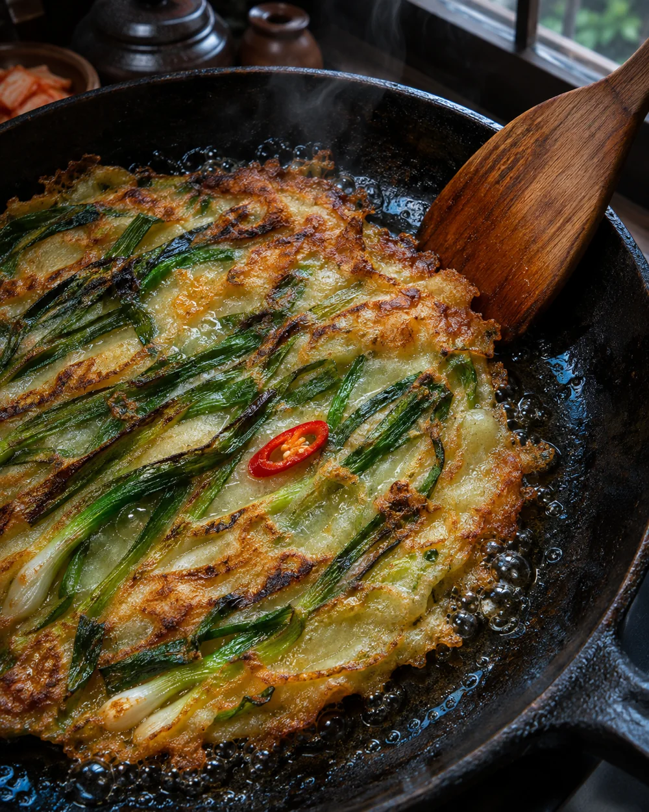

주문과 매출
비 오는 날 파전 주문은 얼마나 늘었을까?
· 원문 보기
2024년 수도권 티오더 · 비 안 온 날 대비
2023년 배달의민족 · 장마 직전 달 대비
2023년 중부 이마트24 · 직전 주 대비
DATA EXPLORER
· 원문 보기
10월 누적 강수량 (mm)
기상청 날씨누리 · 대전 관측소(133) · 일별 원자료
한국은행은 일강수량 20mm 이상인 날 음식점 카드사용액이 평상기후보다 약 5% 감소한 것으로 추정했습니다. 파전 주문과 음식점 전체 소비는 서로 다른 방향으로 움직일 수 있습니다.
2023년 1분기~2025년 2분기 · BOK 이슈노트 2025-29호, 그림 5 · 원문 보기
주문·매출 그래프의 100은 각 출처의 비교 기준입니다. 티오더는 비가 오지 않은 날, 배달의민족은 장마 직전 달, 이마트24는 직전 주를 100으로 두었습니다. 기간을 비교한 수치에는 날씨뿐 아니라 요일 구성, 행사, 매장 이용객 변화도 영향을 줄 수 있습니다.
파전 단일 메뉴에서 확인된 지표는 주문 건수입니다. 매출액 자료는 해물파전을 포함한 제품 4종 합계로만 공개됐습니다. 대전에서 강수량 1mm당 파전 매출이 얼마나 달라지는지 계산하려면 같은 날짜와 지역의 판매 기록이 필요합니다.

파전이 익어가는 순간FOOD STORY
주문 기록에는 무엇을 먹었는지가 남습니다. 왜 하필 파전이었을까요? 두 가지 가설을 짚어봅니다.
처마를 두드리는 빗방울과 팬에서 기름이 튀는 소리. 닮은 소리를 단서로, 전에 먹었던 파전의 냄새와 바삭한 식감까지 떠올리는 건 아닐까요?
“비도 오는데 전 부칠까?” 한 장씩 부쳐 여럿이 나눠 먹었던 경험이 쌓이면, 비가 다시 올 때 파전이 자연스러운 메뉴가 될 수 있습니다.
RESEARCH NOTES
2026년 11월 23일 기준, 최근 5년 안에 관측한 자료를 사용했습니다. 기상청의 관측자료, 한국은행의 카드소비 분석, 주문·매출을 직접 집계한 사업자의 원문을 확인할 수 있습니다.
2022~2026년 각각 10월 1~31일의 일강수량을 합산했습니다. 강수일수는 0.1mm 이상인 날의 수입니다. 10월은 자료 확인일에 한 달 관측이 모두 끝난 가장 최근 달입니다. 각 연도를 선택하면 날씨누리에서 일별 값을 확인할 수 있습니다.
2026년 합계 105.5mm와 강수일수 6일은 대전지방기상청 10월 기후자료 ‘붙임 10’의 대전 수치와 일치합니다.
대전지방기상청 2026년 10월 기후자료 (PDF)한국은행 조사국은 2023년 1월~2025년 6월 지역별 일별 카드사용액과 기상자료를 분석했습니다. 보고서 그림 5에서 일강수량 20mm 이상인 날 음식점 카드사용액의 추정 변화는 약 −5%입니다. 평상기후를 100으로 환산하면 약 95입니다. 전국 음식점 업종의 추정치이며 세부 메뉴별 금액은 제공되지 않습니다.
한국은행 BOK 이슈노트 원문티오더가 2024년 수도권 가맹 매장의 주문을 날씨별로 분석해 2025년 4월 23일 공개했습니다. 파전 주문은 비가 온 날에 29.29% 많았습니다. 공개 자료는 수도권 티오더 이용 매장의 주문 경향을 보여줍니다.
티오더 2024 오더 트렌드 리포트배달의민족이 2023년 장마철 파전 주문 수를 직전 달과 비교해 39.6% 증가했다고 발표했습니다. 원문의 ‘장마철 파전 주문수의 변화’ 도표를 사용했습니다. 장마 기간에는 비가 내리지 않은 날도 포함됩니다.
배민외식업광장 장마철 주문 분석2023년 6월 8~14일 비가 이어진 중부 지역에서 직전 주보다 매출액이 108% 늘었습니다. 이마트24가 6월 26일 공개한 자체 집계로, 오징어해물파전·오징어김치전·치즈닭갈비전·깍두기전을 합산한 값입니다.
신세계그룹 뉴스룸 이마트24 발표같은 매장의 날짜별 파전 주문 건수와 결제액을 대전 관측소 일강수량과 연결합니다. 휴무일을 제외하고 요일·계절을 맞춘 뒤 강수량 구간별 일평균 판매량과 매출액을 비교하면, 대전에서도 비슷한 경향이 있는지 살펴볼 수 있습니다.
소리나 식사 기억이 주문에 영향을 주었는지는 매출 기록만으로 판단하기 어려워 별도 설문이 필요합니다.